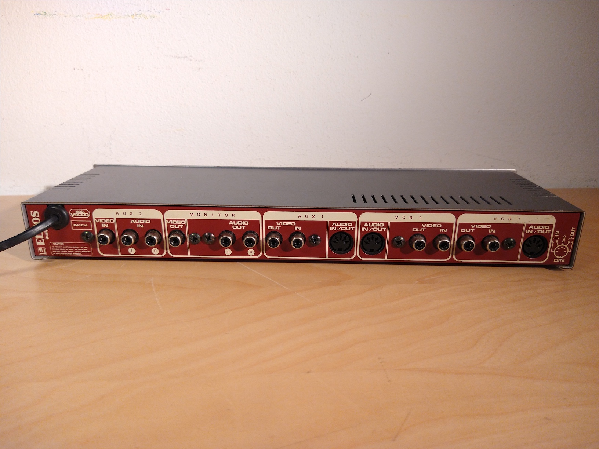
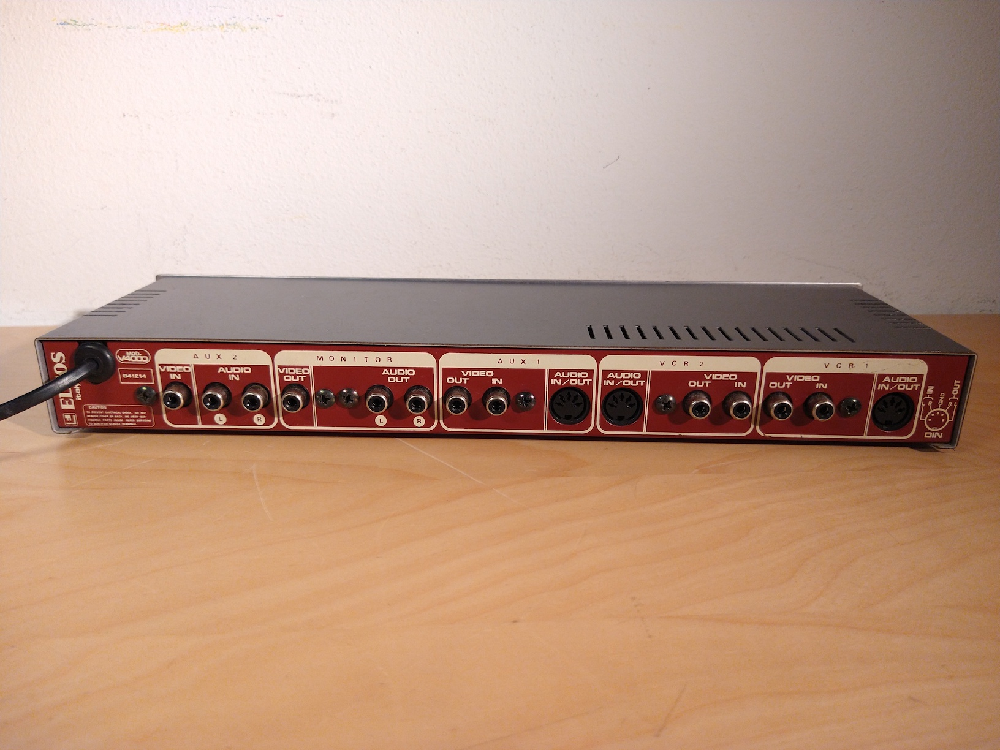

Eltos - a mysterious Italian video company
The first ever video processor I got, which was more or less the spark that got me into experimenting with analog video, was the V3000 from a weird unknown company called Eltos. I now have three devices in total from them and, importantly, have been able to find a little more information about them.
Eltos was a video equipment manufacturer from Italy; while any specific details about them seem to have been lost to time, by what I can tell they seem to have been moderately popular here in Italy in the prosumer and lower end professional market, since I've seen a few of devices from them sold on Ebay and other online shopping sites.
An overview
Eltos V2500 video effects

{kind=link}
This device applies a simple posterise effect (similar to the "paint" effect on Panasonic video mixers) to the incoming video signal - this flattens the colours of the image and makes everything look like a drawing or a poster (hence the name).
There are knobs on the front to adjust the range of the effect ("effect control") and its level, and a button to switch the image between colour and black and white. A "defeat" switch is also present, which toggles a relay inside and bypasses any image modifications. Note that the relay is also used to pass-through the image when the unit is powered off, a clever feature.
Eltos V3000 video signal conditioning


This device allows the user to change various properties of the video signal (sync level, video gain, definition, colour) using the knobs on the front, in order to adjust the image as desired. There's also a switch to change the audio between stereo and mono. The "definition" control is the same as the "enhance" or "sharpness" effects found on other similar devices from the time, and was a very common feature.
Three different A/V outputs are present (meaning that this could also be used as a distribution amplifier), with one being labelled as "monitor" - this output can be changed, using a button on the front, to show either the modified signal or the original one, in order to compare between any changes that may have been made.
Eltos V4000 video switching unit
 

{kind=link}
This device routes audio and video between different inputs and outputs - there are three sets of audio and video input and output groups (VCR1, VCR2, AUX1), plus an input-only one (AUX2) and a monitor output, which can be used to view any of the four inputs.
The likely use for this would have been to connect to two VCRs (the minimum needed for editing), to a camera (using input AUX2) and a monitor, while AUX1 could have been used either for a third VCR if necessary, or to connect to other video processing units present (like the other Eltos ones).
Note that the audio input and output connections for VCR1, VCR2 and AUX2 are on 5-pin DIN connectors, this was fairly common on audio recorders but was likely used here to save space, since normal RCA plugs wouldn't have fit.
Other products
Eltos's products can be divided in two main categories: their stand-alone devices, like the ones I have, seemed to have been the most popular - they also sold a few audio mixers (from what I can tell, there were three models in total), which for video editing purposes could have been used to add narration or music to a home movie.
There were also rack-mountable devices; it's much harder to find any info about these unfortunately, but the fact that they were rack-mountable and the use of BNC jacks likely indicates that they were meant for the professional market.
The rack-mount devices
As previously mentioned, there is very little information available about these, apart from two online listings about the VX861 video mixer and the VCC200 colour corrector. However, thanks to this ad (which seems to be from one of Eltos's resellers) I found on an A/V mag from December 1988, we can get a pretty good view of their higher-end lineup from the time.

The picture in the ad shows all of the devices made by them at the time installed in a rack-mount case, with two preview monitors on the top. While it's obviously not high-res enough to be able to read any labels from the devices themselves, the ad is accompanied by some text detailing what their product lineup was, which seems to correspond exactly with the way the way the various devices were installed, from top to bottom.
Translated, the ad reads as:
- Control monitors
- Digital memory
- RGB colour corrector
- Video distributors
- Titler
- Video commutator
- Audio mixer
- Video mixer
The best for the most evolved video-amateur.
The mixer shown there is very clearly the MX623A, while the video mixer and colour corrector can also be seen there. Note that the MX623A isn't a rack-mountable device, so it seems to be installed in some sort of mounting frame (you can just barely make out an outline between the two).
The complete list
In general, these are all the products they made that I've been able to find any information about online:
-
Stand-alone devices
- Eltos V2500 video effects unit
- Eltos V3000 video signal conditioning
- Eltos V4000 video switching unit
- Eltos V5000 audio processor and camera power supply
- Eltos VD7 audio/video distribution amplifier and noise reduction unit
- Eltos VR10 audio video rack
- Eltos VCC200 video color control (=colour corrector)
- Eltos VX861 video effects generator (=video mixer)
- Eltos MX500 audio mixer
- Eltos MX623A audio mixer
- Eltos MX700 audio mixer
Rack-mount devices
Audio mixers